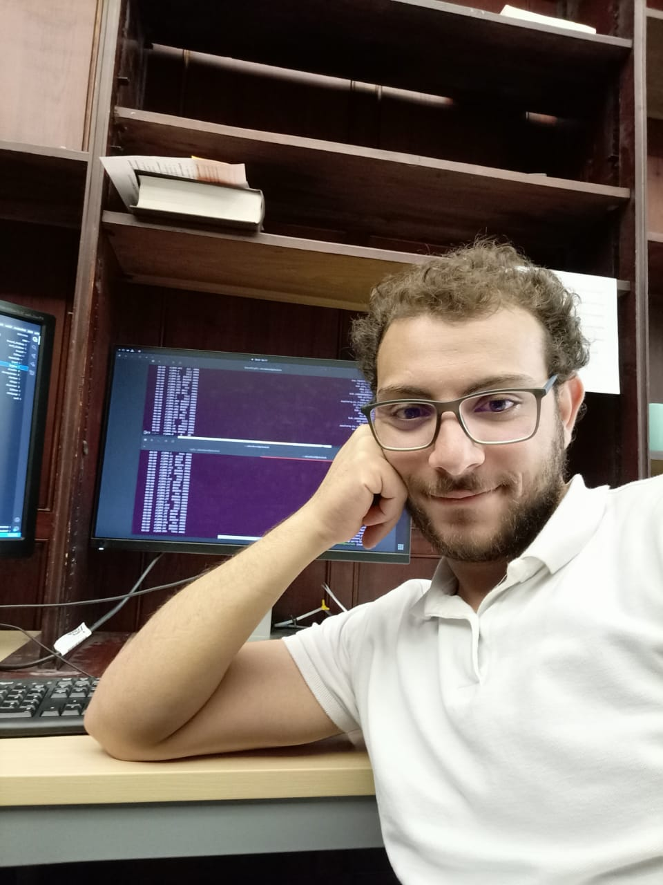
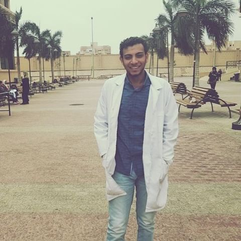
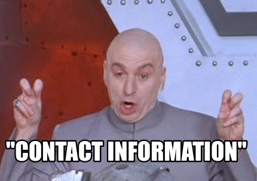

WHO AM I?
Me at the top of Arther's seat, Edinburgh, Scotland
My name is Mahmoud Shalash, and I am from Egypt. I came to the UK for the first time in 2021 to get my master degree from The University of Edinburgh (UoE) in medicinal and biological chemistry.
I got my undergrad degree in pharmaceutical science from October University for Modern Science and Art (MSA) from Egypt.
I graduated from MSA with two certificates. One of them was issued from the University of Greenwich, a joint programme. I did both of my graduation projects in computational chemistry.
My graduation project from UoE was about "Benchmarking an Absolute Binding Free Energy Calculation Workflow for Computer-Aided Drug Design" in Julien Michel's group while my graduation project from MSA was about "Mapping selective pharmacophore for EGFR and VEGFR Tyrosine kinase inhibitors".
SKILLS

Me working on Kusanagi, my working station at Julien's group
General Skills
Communication Skills
Teamwork
Time Management
Strategic Planning & Problem Solving
Good listener
Determination and Persistence
Fast and self learner
I did put all of these skills into action during my MSc graduation project where I solved almost all the problems I was facing during my project by myself by doing a lot of searching and reading. I also showed my ability to learn fast where I learned a lot of new skills such as how to use BioSimSpace, how to run ABFE calculations in Sire, and how to use Amber tools in just under 3 months during my project. I also had to write and report my daily tasks and achievements with my supervisor through Electronic Notebook (ENB) and weekly meetings. I was also planning and scheduling my work to make sure I am on track with my project and that I am not wasting time. For complicated problems, I was showing persistence and determination to solve them before asking for help. I was also a good listener and was always ready to help my team members when facing problems. For instance, I faced a problem that took me 3 days to solve and one of our group members faced the same problem. I was able to help her and solve the problem in under 20 minutes.
Computational and Programming Skills
MicroSoft Office
Windows and Linux
Python
R
Bash Scripting
Git and GitHub
SQL (PostgreSQL)
Data analysis using Python and R using miniconda, Panadas, Matplotlib, dplyr, etc...
Chemistry Software such as MOE, Pymol, Amber Tools, VMD
Python Frameworks for biology and chemistry such as BioSimSpace, RDKit, Biopython
Basics knowlodge about ML, and Python libraries such as SciKit learn
Cloud computing (Colab) and SSHing
I used my knowledge in programming and computational skills during my MSc graduation project where I used Python to write
codes that run the simulation process using PEMD.CUDA using BioSimSpace library.
I also contributed to the Python code
used to analyse the result of the Alchemical Free Energy calculations using Sire by editing it
so it can work for my system without errors. I also used to work on-site or remotely during my project
while using Git and GitHub to share my codes with my supervisor. Also, I wrote a small python script that
can be used to produce multiple copies of the files and folders that are used to run one run of the ABFE calculation,
for more information follow this link
I also helped one of my friends who was doing a project in another group by writing a bash script that helped him to do his analysis faster by automating it than doing it manually.
RESEARCH
Me searching for a good book about medicinal chemistry in the main library of the University of Edinburgh
My Research Interests
I am interested in medicinal and computational chemistry, particularly the use of computational methods to discover and develop new
pharmaceutical compounds to target proteins of interest. That is why I did both of my graduation projects from my BSc and MSc in the
field of medicinal and computational chemistry departments in MSA and UoE. I am also interested in the field of machine learning and its
applications in the field of chemistry and biology, but I did not do any project about this yet.
MSc DISSERTATION, The University of Edinburgh
The research was under the title "Benchmarking an Absolute Binding Free Energy Calculation Workflow for Computer-Aided Drug Design". The research involved testing the effectiveness of ABFE as a tool for fragment based drug desgin (FBDD). First, I ran simulation processes for three ligands, two fragments and one merged compound. ABFE calculations for the three ligand were then performed using SOMD, a molecular dynamic software. The result obtained from these calculations were then compared to the experimental data and another computational study to measure the accuracy and reliability.
Here are the dissertation and the GitHub repo if you want to know more.
BSc DISSERTATION, MSA University
The research was under the title "Mapping selective pharmacophore for EGFR and VEGFR Tyrosine kinase inhibitors". This research aimed to design and validate a pharmacophore that is selective for each EGFR andVEGFR tyrosine kinase. The pharmacophores that was designed can be then used to screen chemical libraries for promising hits by using its common features to check if other chemical compounds have the same features as well that can lead to the same interactions, and therefore conduct the same biological activity. Here is the thesis to read more about it.
A published paper
I also published a paper as a co-author. The paper's title is "Local anaesthetic potential, metabolic profiling, molecular docking and in silico ADME studies of Ocimum forskolei, family Lamiaceae".
The research aimed to detect the bioactive metabolites from Ocimum forskolei aerial parts which are responsible for the local anaesthetic activity of the ethyl acetate fraction. I performed the docking process and recognising the hydrogen bonds formed between the compounds and the activesite.
To read more about the research, you can use this link to open the paper in the journal.
Jobs

Me wearing the lab coat at MSA University
Volunteer tutor
I tutor the ”Scotland higher level of Chemistry and Biology” for students at (STTEPS) - University of Edinburgh
Inspector
I worked as inspector at the Egyptian National Food Safty Authority (NFSA)
Community pharmacist
I worked as a part-time community pharmacist during my study at some pharmacies in October and Tanta cities
Interests
Gon and Killua from anime HxH
My interests are:
Anime
Reading books (History and Sci-Fic)
Coding
Football
Basketball
Table tennis
Hiking
Contact
One reason why we did not have any contact with aliens yet is because we did not give them any contact information.

Elements
Text
This is bold and this is strong. This is italic and this is emphasized.
This is superscript text and this is subscript text.
This is underlined and this is code: for (;;) { ... }. Finally, this is a link.
Heading Level 2
Heading Level 3
Heading Level 4
Heading Level 5
Heading Level 6
Blockquote
Preformatted
i = 0;
while (!deck.isInOrder()) {
print 'Iteration ' + i;
deck.shuffle();
i++;
}
print 'It took ' + i + ' iterations to sort the deck.';
Lists
Unordered
- Dolor pulvinar etiam.
- Sagittis adipiscing.
- Felis enim feugiat.
Alternate
- Dolor pulvinar etiam.
- Sagittis adipiscing.
- Felis enim feugiat.
Ordered
- Dolor pulvinar etiam.
- Etiam vel felis viverra.
- Felis enim feugiat.
- Dolor pulvinar etiam.
- Etiam vel felis lorem.
- Felis enim et feugiat.
Icons
Actions
Table
Default
| Name |
Description |
Price |
| Item One |
Ante turpis integer aliquet porttitor. |
29.99 |
| Item Two |
Vis ac commodo adipiscing arcu aliquet. |
19.99 |
| Item Three |
Morbi faucibus arcu accumsan lorem. |
29.99 |
| Item Four |
Vitae integer tempus condimentum. |
19.99 |
| Item Five |
Ante turpis integer aliquet porttitor. |
29.99 |
|
100.00 |
Alternate
| Name |
Description |
Price |
| Item One |
Ante turpis integer aliquet porttitor. |
29.99 |
| Item Two |
Vis ac commodo adipiscing arcu aliquet. |
19.99 |
| Item Three |
Morbi faucibus arcu accumsan lorem. |
29.99 |
| Item Four |
Vitae integer tempus condimentum. |
19.99 |
| Item Five |
Ante turpis integer aliquet porttitor. |
29.99 |
|
100.00 |